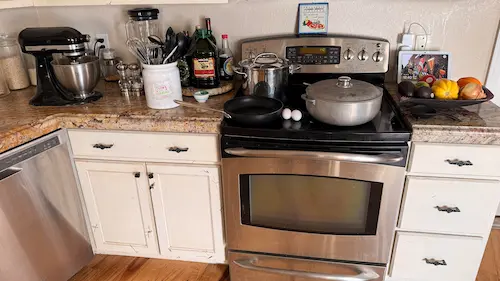

Lets Make Something Yummy!

You have 2 choices
You can add one of your favorite recipes to our website by clicking Submit above.
You can search for a yummy recipe already submitted by someone else by clicking on the category you are interested in.